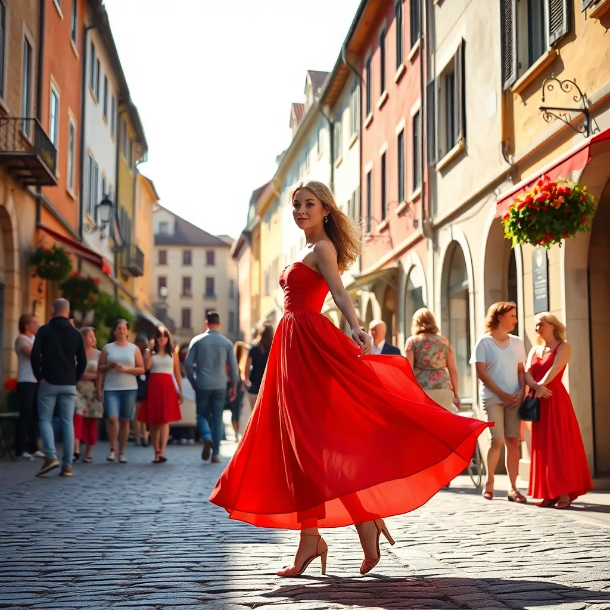
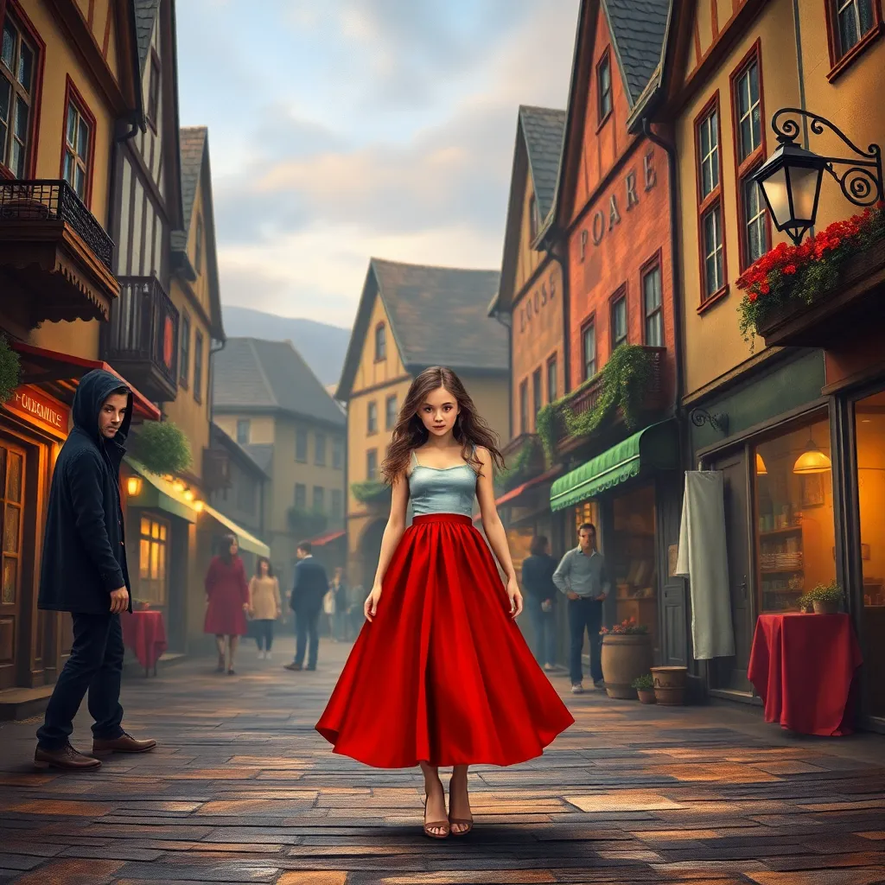
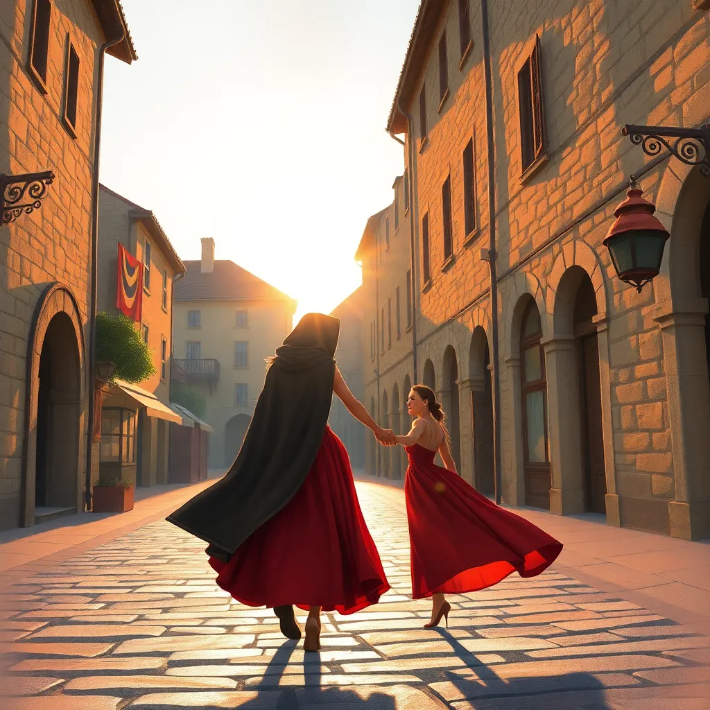
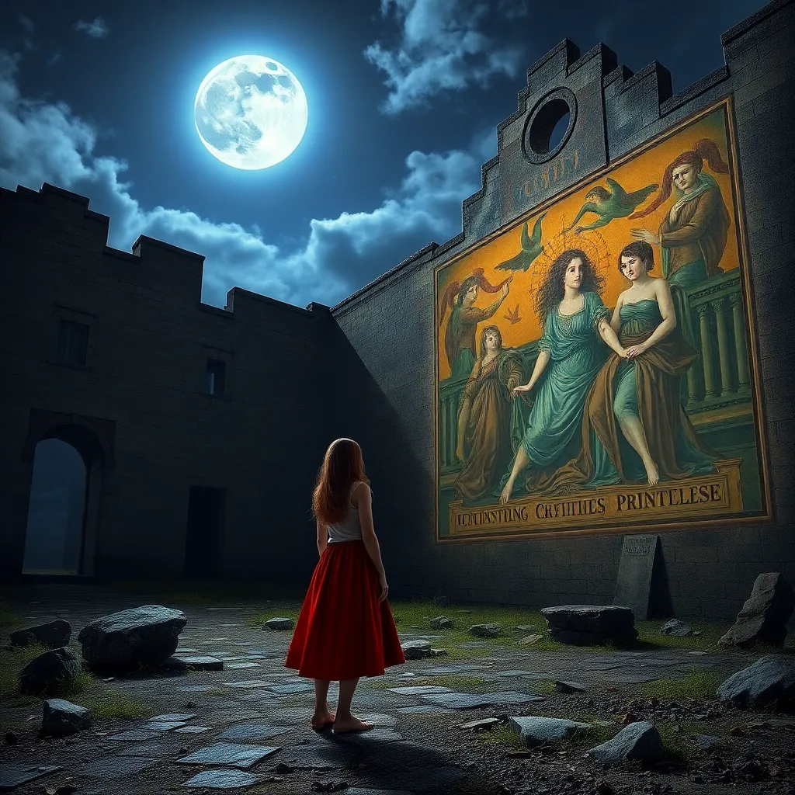
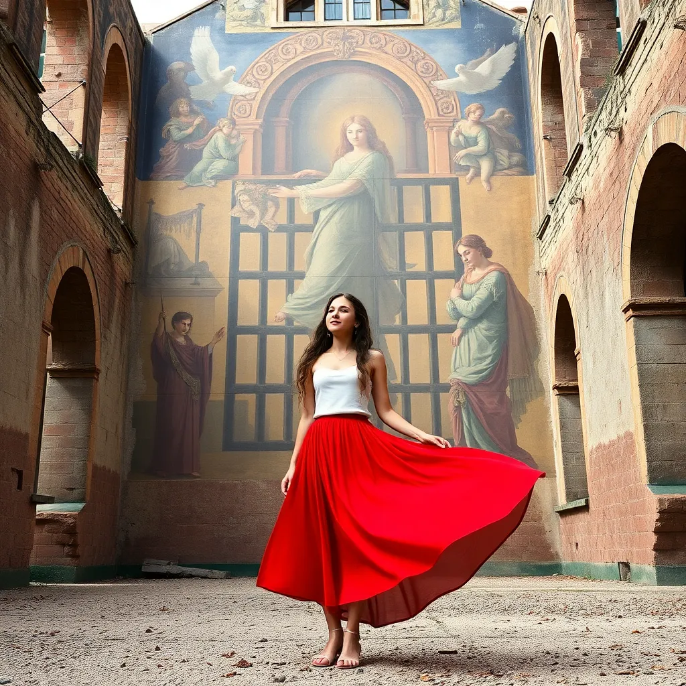

Generated Images
Theme: a young lady in red skirt

Prompt 1:
Create an image of a quaint town square bustling with activity. In the midst of the crowd, a young woman stands out in a vibrant red skirt that billows softly in the breeze. Her movements are graceful and elegant, her presence captivating. The scene is bathed in warm sunlight, casting soft shadows across the cobblestone streets.

Prompt 2:
A young lady in a vibrant red skirt stands in the middle of a quaint town square, midst the hustle and bustle. She is approached by a mysterious stranger with piercing eyes. The town is depicted in a realistic style, with warm lighting and a cozy atmosphere. Focus on the contrast between the vibrant red skirt and the muted tones of the square.

Prompt 3:
Young woman in flowing red skirt guides cloaked stranger through quaint town square. Sun setting, casting long shadows. Stone buildings and cobblestone streets. Soft painterly style, warm evening light.

Prompt 4:
Depict a young woman in a vibrant red skirt and a mysterious stranger shrouded in darkness as they approach the looming monastery in the fading golden light of dusk. The scene should have an eerie atmosphere with a chilling breeze causing the woman's skirt to billow dramatically. Capture the woman's intrigue and the stranger's enigmatic presence, ensuring the woman remains the focal point despite the stranger's intimidating aura.

Prompt 5:
Desolate monastery ruins illuminated by moonlight, young woman in vibrant red skirt looking at a sprawling fresco on the wall, fresco depicting a cursed princess imprisoned within the walls, eerie and mysterious atmosphere.

Prompt 6:
A young woman stands in the ruins of a monastery, a sprawling fresco on the wall behind her. The fresco depicts a cursed princess imprisoned within the walls. The woman's expression is contemplative, as she gazes at the fresco, her vibrant red skirt billowing in the wind.